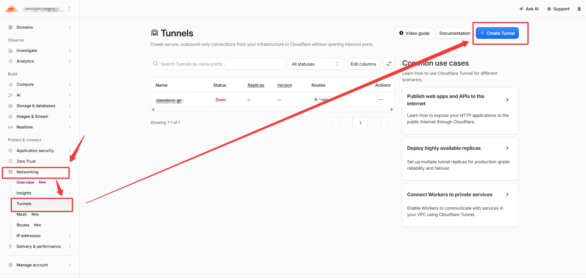
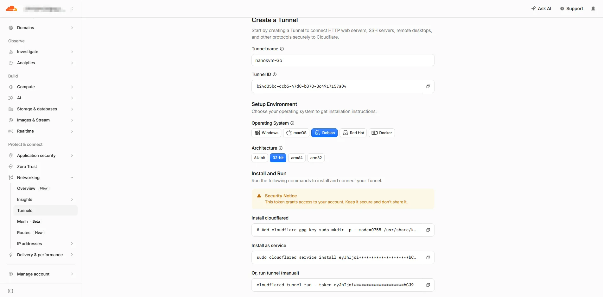
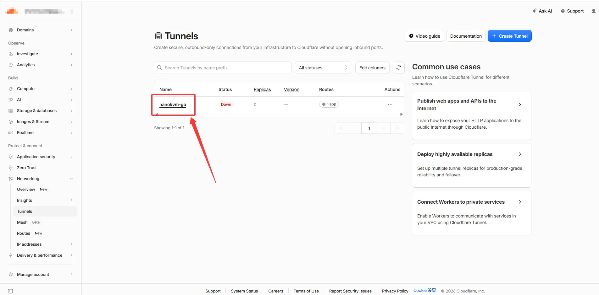
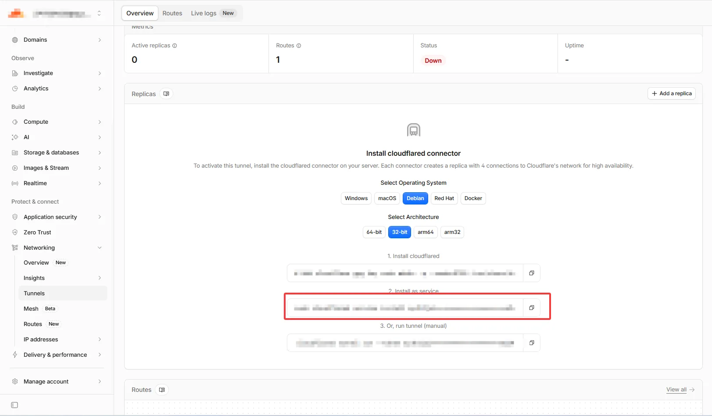
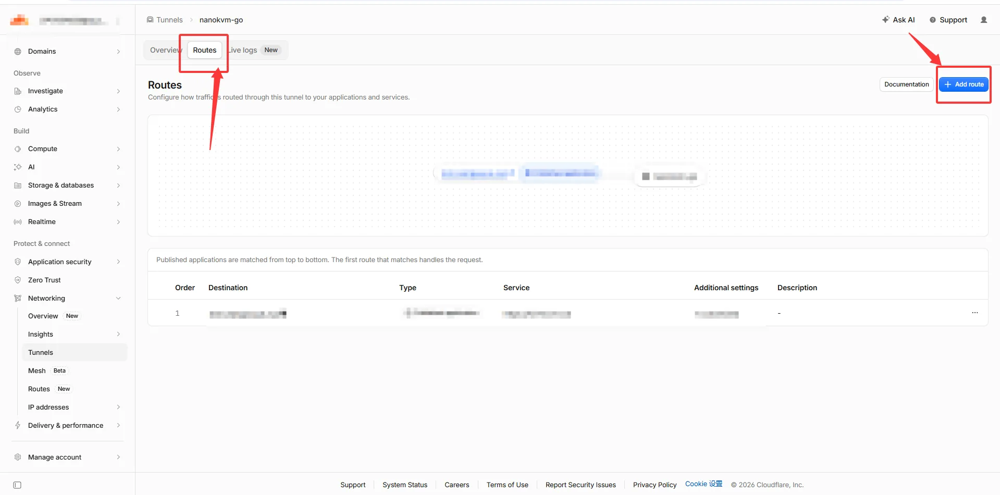
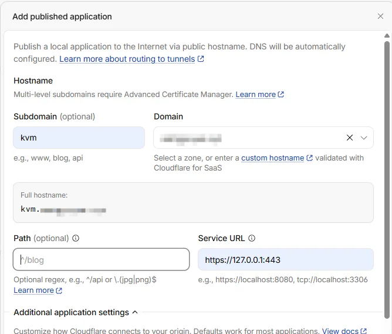
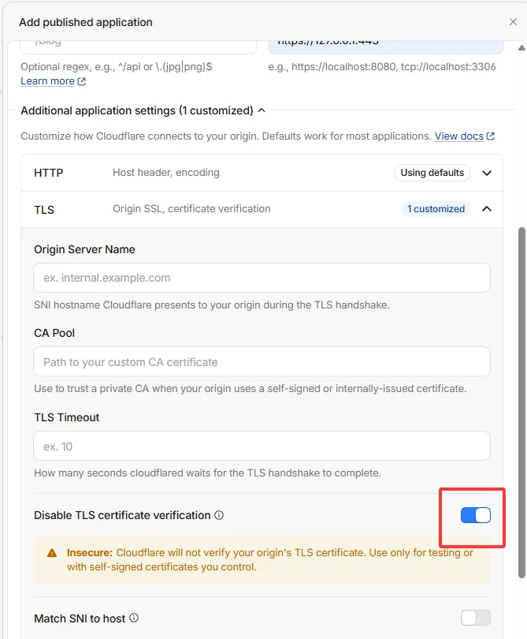

中文
中文Cloudflare Tunnel
Cloudflare Tunnel 通过运行在 NanoKVM Go 上的 cloudflared 主动连接 Cloudflare，使设备无需公网 IP、端口转发或入站防火墙规则即可从外网访问。
如果你完全不了解域名、DNS 的用法，建议直接参考第二部分；如果你已经知道如何购买域名，以及如何修改 DNS 记录，则参考第三部分。
无论选择哪种方式，都应先修改 NanoKVM Go 的默认密码。长期使用时，建议再配置 Cloudflare Access。
第一部分：基础配置（安装与准备）
使用前准备
开始配置前，请确认：
- NanoKVM Go 已连接互联网；
- 可以在局域网内正常打开 NanoKVM Go 网页控制端；
- 已开启 SSH，并知道设备的局域网 IP 和 SSH 密码；
- 可以使用 SSH 和 SCP 的电脑；
- 正式 Tunnel 用户已经准备好 Cloudflare 账号和自有域名。
登录 NanoKVM Go
在 Windows PowerShell 或其他终端中执行：
ssh root@192.168.255.255
将 192.168.255.255 替换为 NanoKVM Go 的实际局域网 IP。首次连接时，确认 IP 地址无误后输入 yes 接受设备指纹，再输入 SSH 密码。NanoKVM Go 的 SSH 默认账号为 root，默认密码为 sipeed，详见常见问题。
安装 cloudflared
下载并上传程序
在电脑上打开 cloudflared Releases，下载最新的 cloudflared-linux-armhf，不要下载 arm64 或 amd64 版本。
PowerShell 复制到 NanoKVM Go
scp "C:\Users\你的用户名\Desktop\cloudflared-linux-armhf" root@192.168.255.255:/root/cloudflared
安装
返回 NanoKVM Go 的 SSH 终端，执行：
install -m 0755 /root/cloudflared /usr/local/bin/cloudflared
/usr/local/bin/cloudflared --version
第二部分：免域名访问（Quick Tunnel）
Quick Tunnel 不需要 Cloudflare 账号或域名。cloudflared 启动后会生成一个随机的 trycloudflare.com 地址；进程停止后，该地址随之失效。
启动 Quick Tunnel
执行：
/usr/local/bin/cloudflared tunnel --no-autoupdate --protocol http2 --no-tls-verify --url https://127.0.0.1:443
命令会持续占用当前终端。等待日志中出现随机地址，例如：
https://random-words.trycloudflare.com
复制完整地址到浏览器，确认能够打开 NanoKVM Go 登录页面。请勿公开该地址；随机地址本身不是访问密码。
停止 Quick Tunnel
返回运行 cloudflared 的终端，按 Ctrl+C。命令提示符重新出现后，Quick Tunnel 已停止，原随机地址不应再作为有效入口使用。
第三部分：域名访问（正式 Tunnel）
正式 Tunnel 使用固定域名，并让 cloudflared 随 NanoKVM Go 开机启动。本节采用 Cloudflare Dashboard 管理的 Tunnel，通过 Token 连接。
外网浏览器
│
│ 访问 https://kvm.example.com
▼
Cloudflare
│
│ cloudflared 主动建立的出站连接
▼
NanoKVM Go（https://127.0.0.1:443）
将域名接入 Cloudflare
如果域名尚未接入 Cloudflare：
- 在 Cloudflare Dashboard 中添加根域名；
- 检查 Cloudflare 自动导入的 DNS 记录，避免误删现有的 A、CNAME、MX 或 TXT 记录；
- 在域名注册商处，将 Nameserver 修改为 Cloudflare 为该域名分配的两条地址；
- 等待 Cloudflare 中的域名状态变为
Active。
Cloudflare 分配的 Nameserver 因账号和域名而异，必须以当前 Dashboard 显示的值为准，不要照抄示例。
创建 Tunnel 并取得 Token
Cloudflare Dashboard 的界面可能调整，以下入口名称以当前页面为准：
- 进入
Networking>Tunnels；

- 创建一个 Cloudflare Tunnel；
- 将 Tunnel 命名为容易识别的名称，例如
nanokvm-go；

- 打开该 Tunnel 的
Add a replica页面；

- 复制页面提供的安装命令，从中取得以
eyJ开头的 Tunnel Token。

Tunnel Token 可以直接运行该 Tunnel。任何获得 Token 的人都可能连接到你的 Tunnel。不要把 Token、包含 Token 的命令或终端截图发送给他人；如果 Token 泄露，应立即在 Tunnel 页面轮换 Token，并更新 NanoKVM Go 上保存的 Token。
将 Token 保存到设备
Dashboard 给出的安装命令中，只有最后一段以 eyJ 开头的字符串是 Tunnel Token，前面的命令部分不要复制。
在 NanoKVM Go 的 SSH 终端中依次执行，把示例中的 eyJ... 替换为实际的 Token：
install -d -m 0700 /etc/cloudflared
echo 'eyJ...' > /etc/cloudflared/tunnel-token
chmod 600 /etc/cloudflared/tunnel-token
install -d 创建只有 root 能进入的目录，echo 通过重定向把 Token 写入文件，chmod 600 保证只有 root 可以读写。Token 只写入文件，不会打印到终端。
检查文件权限和字节数，不要查看文件内容：
stat -c '%a %n' /etc/cloudflared/tunnel-token
wc -c < /etc/cloudflared/tunnel-token
预期权限为 600。字节数为 Token 长度加 1（末尾换行符），正常是几百字节；如果输出 0，说明文件为空，需要重新写入。
前台测试 Tunnel 连接
执行：
/usr/local/bin/cloudflared tunnel --no-autoupdate --protocol http2 run --token-file /etc/cloudflared/tunnel-token
日志出现 Registered tunnel connection 后，表示 cloudflared 已连接到 Cloudflare。前台测试完成后按 Ctrl+C 停止进程。
此时只证明 Tunnel 连接已建立；在配置 Published application 之前，固定域名还不能访问 NanoKVM Go。
添加 Published application
在 Cloudflare Dashboard 中打开刚创建的 Tunnel：
- 进入
Routes；

- 选择
Add route>Published application； Subdomain填写计划使用的子域名，例如kvm；Domain选择已经接入 Cloudflare 的根域名；Path留空；Service URL填写https://127.0.0.1:443；

- 展开附加应用设置，在 TLS 设置中启用
Disable TLS certificate verification；

- 保存路由。
启用 Disable TLS certificate verification 是因为 NanoKVM Go 本地 HTTPS 服务通常使用自签名证书。该设置只影响 cloudflared 到本机 127.0.0.1:443 的连接，不会关闭浏览器与 Cloudflare 之间的 HTTPS。
创建 systemd 服务
在 NanoKVM Go 上创建 /etc/systemd/system/cloudflared.service：
[Unit]
Description=Cloudflare Tunnel for NanoKVM Go
After=network-online.target
Wants=network-online.target
[Service]
Type=simple
User=root
ExecStart=/usr/local/bin/cloudflared tunnel --no-autoupdate --protocol http2 run --token-file /etc/cloudflared/tunnel-token
Restart=always
RestartSec=5
[Install]
WantedBy=multi-user.target
加载服务并设置开机自动启动：
systemctl daemon-reload
systemctl enable --now cloudflared
systemctl status cloudflared --no-pager
当服务状态为 active (running)，且日志中出现 Registered tunnel connection 时，说明连接已建立。查看最近日志：
journalctl -u cloudflared -n 50 --no-pager
从外网访问
将电脑或手机切换到其他网络，在浏览器中访问配置的固定域名，例如：
https://kvm.example.com
如果能够打开 NanoKVM Go 登录页面，请使用 NanoKVM Go 自身的账号和密码登录，并测试画面、键盘、鼠标和电源控制。
安全建议
- 为 NanoKVM Go 设置独立的强密码；
- 长期使用时，在 Cloudflare Zero Trust 中为该域名配置 Access 身份验证和允许策略；
- 不公开 Quick Tunnel 地址或正式 Tunnel 域名；
- 不要把 Tunnel Token、Cloudflare API Token 或 SSH 密码写入文档和截图；
- 定期更新
cloudflared和 NanoKVM Go； - 定期检查 Tunnel 连接、访问日志和 Cloudflare 账号成员；
- Token 泄露后立即轮换，不要只修改 NanoKVM Go 登录密码。
如果不再使用正式 Tunnel：
- 在 Cloudflare Dashboard 中删除或停用对应的 Published application；
- 在 NanoKVM Go 上执行
systemctl disable --now cloudflared； - 确认不再需要恢复后，再删除本地 Token 和服务文件；
- 如果 Token 曾经泄露，在 Dashboard 中轮换 Token 并断开旧连接。
删除路由或 Token 会使原访问入口失效，操作前请确认没有其他用户或 Tunnel 副本仍在使用。